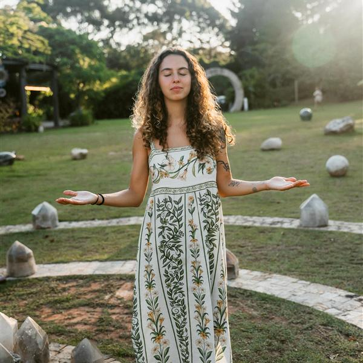

Como posso te acompanhar
Um cuidado para cada momento da sua jornada
Da consulta individual ao retiro presencial — cada caminho criado para tratar a causa raiz da sua saúde.
Consultas, retiros femininos e programas terapêuticos que unem fitoterapia, plantas medicinais, ginecologia natural, mentalidade e neurociência — para mulheres com menopausa, endometriose, SOP, ansiedade e dores crônicas que querem um cuidado que realmente dura.
Falar no WhatsApp
Da consulta individual ao retiro presencial — cada caminho criado para tratar a causa raiz da sua saúde.
Com formação em Naturologia, Ayurveda, Ginecologia Natural e Thetahealing, atendo mulheres em diferentes fases da vida.

Sou Mariah Caroline, Naturóloga especializada em saúde da mulher, Ayurveda, Yoga, Fitoterapia e Comportamento. Uno a ciência moderna aos saberes tradicionais ancestrais para te ajudar a recuperar sua saúde, seu autoconhecimento e seu equilíbrio — de dentro para fora.
Nas minhas consultas, retiros e programas, não trato apenas sintomas isolados. Faço uma análise completa da sua saúde — física, mental e emocional — para encontrar a causa raiz do desequilíbrio e criar um plano real e personalizado para você.